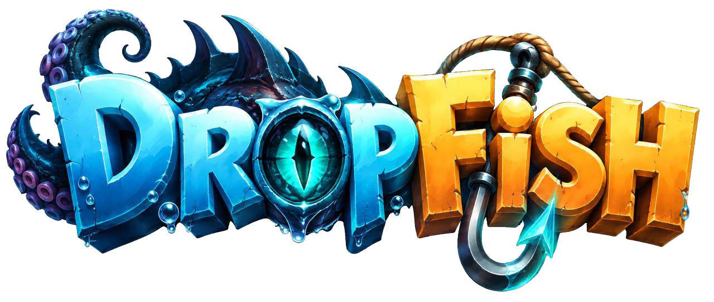
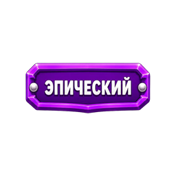

Telegram Mini App • Browser

0,0 кгВес
10Забросов
Солнечно
Высока вероятность встретить чайку.
Активные эффекты
0Пока нет
Хронология улова
Первый заброс ждёт вас.
Журнал
Здесь будет собрана расширенная статистика сессий. Текущая хронология полностью сохранена на экране рыбалки.
Подробный журнал
Статистика категорий, достижений и прошлых сессий будет подключена без изменения механики улова.
Коллекция
Раздел подготовлен для рыб, артефактов, реликвий и трофеев. Существующие данные игры остаются источником истины.

Коллекция готовится Все найденные предметы продолжают учитываться игровой логикой.